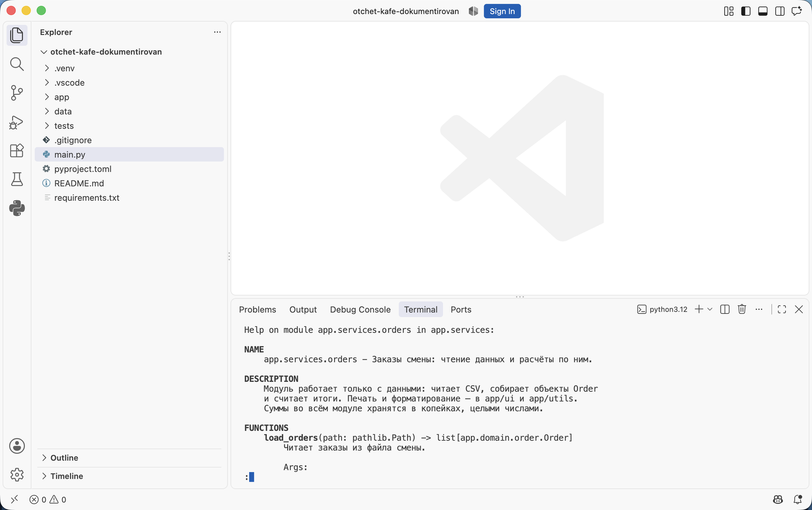
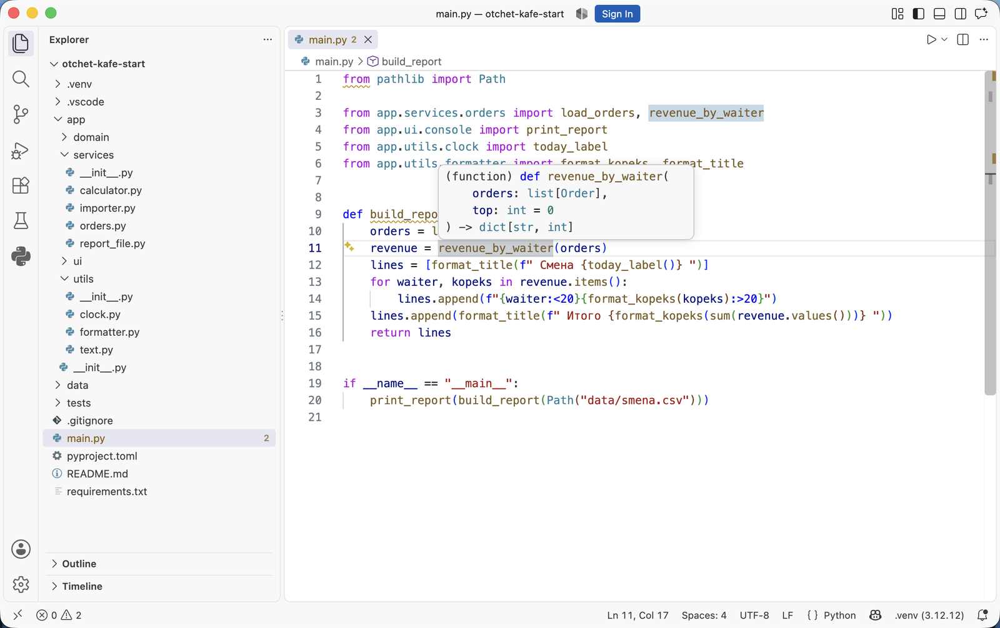
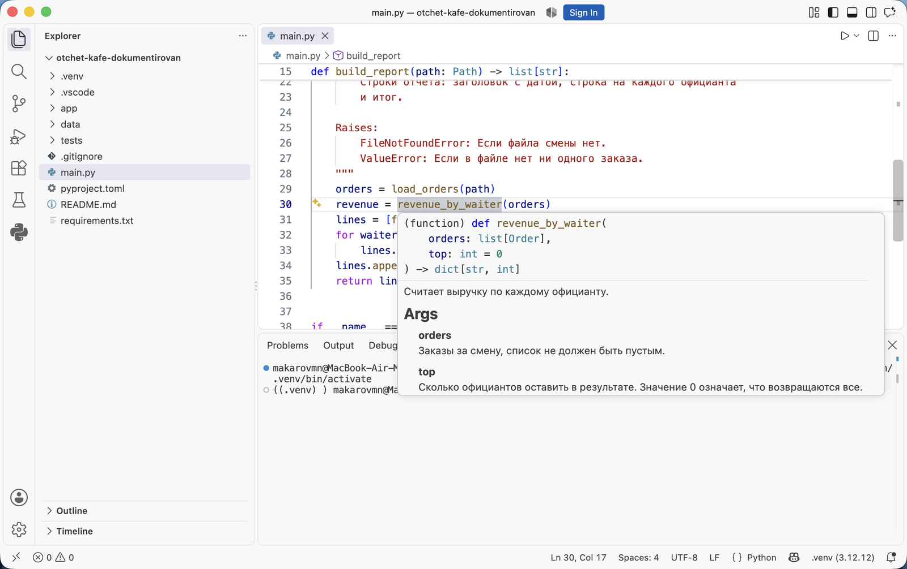

Докстринги и документация кода · МДК.01.01 · разработка программных модулей
Глава 4.2
Докстринг:
где пишется и как читается
В этой главе разобрано устройство докстринга: в каком месте файла он должен стоять, чтобы Python его сохранил, как достать его из программы через __doc__, help() и модуль inspect, какие правила задаёт PEP 257 и чем отличаются однострочная и многострочная запись. В конце — восемь ошибок, из-за которых описание не доходит до читателя.
- Категория
- Синтаксис и стандарт
- Уровень
- Начальный
- Опирается на
- Глава 4.1, модули и пакеты
- Зачем это знать
- Писать докстринги так, чтобы их видели инструменты
§1Определение и место в файле
Докстринг — строковый литерал, стоящий первой инструкцией в модуле, классе, функции или методе. Python сохраняет такую строку в атрибуте __doc__ соответствующего объекта. Пишут докстринг в тройных кавычках: они позволяют занять несколько строк и оставляют внутри одинарные и двойные кавычки без экранирования.
Докстрингстрока документации
Стоит сразу после строки def, class или в самом начале файла. Ничего исполняемого перед ним быть не должно: как только выше появляется присваивание, импорт или другая инструкция, строка перестаёт быть докстрингом и становится обычным значением, которое вычисляется и отбрасывается.
Место в файле решает, сохранится строка или пропадёт. Ниже одна и та же функция с одной и той же строкой, сдвинутой на строку ниже.
Одна строка, два местапереключите вкладку
def normalize_name(name: str) -> str: """Приводит имя официанта к виду «Фамилия Имя».""" cleaned = " ".join(name.split()) return cleaned.title()
>>> normalize_name.__doc__
'Приводит имя официанта к виду «Фамилия Имя».'
ДокстрингСтрока стоит первой инструкцией тела, поэтому Python сохранил её в атрибуте __doc__. Её увидят help(), подсказка редактора и сборщик документации.
def normalize_name(name: str) -> str: cleaned = " ".join(name.split()) """Приводит имя официанта к виду «Фамилия Имя».""" return cleaned.title()
>>> print(normalize_name.__doc__)
None
Обычная строкаВыше неё стоит присваивание, поэтому строка перестала быть докстрингом. Python вычислил её как выражение и отбросил результат. Программа работает по-прежнему, ошибки нет, а описания нет нигде: подсказка редактора пустая.
Разница видна только из программы: во втором случае normalize_name.__doc__ равен None. По внешним признакам такое место отличается от первого пустой подсказкой редактора, и ошибки при запуске не возникает.
§2Где Python хранит докстринг
Докстринг доступен через атрибут __doc__ у любого объекта, который его имеет: модуля, класса, функции, метода. Атрибут — обычная строка, с ней можно работать как с любой другой.
>>> from app.utils.text import normalize_name >>> normalize_name.__doc__ 'Приводит имя официанта к виду «Фамилия Имя» с одним пробелом.' >>> import app.utils.text >>> app.utils.text.__doc__ 'Работа с именами и строками отчёта.' >>> print(len.__doc__) Return the number of items in a container.
Последняя строка показывает, что через тот же атрибут читаются описания встроенных функций: докстринги устроены одинаково и в вашем коде, и в стандартной библиотеке.
У многострочных докстрингов в __doc__ сохраняются и отступы, которыми текст был выровнен в файле. Чтобы получить текст без общего отступа, применяют inspect.getdoc:
>>> import inspect >>> from app.services.calculator import calculate_average >>> print(inspect.getdoc(calculate_average)) Считает среднюю оценку по списку. Args: grades: Оценки студента, список не должен быть пустым. Returns: Среднее значение, округлённое до двух знаков.
Ключ python -OO запускает программу без докстрингов: они удаляются, и __doc__ становится None. Такой запуск применяют для экономии памяти в готовых сборках. Программу, которая читает __doc__ своих функций и строит по нему поведение, этот ключ ломает. Докстринг предназначен людям и инструментам сборки документации.
§3help и подсказка редактора
Встроенная функция help() печатает справку об объекте: подпись, докстринг и, для модулей и классов, перечень их содержимого. Она работает только на том, что записано в коде, и никаких описаний не добавляет.
>>> help(calculate_average)
Help on function calculate_average in module app.services.calculator:
calculate_average(grades: list[int]) -> float
Считает среднюю оценку по списку.
Args:
grades: Оценки студента, список не должен быть пустым.
Returns:
Среднее значение, округлённое до двух знаков.
Raises:
ValueError: Если список оценок пуст.
На модуле help() печатает его докстринг и перечень функций с первыми строками их описаний. Так проверяют, что описания на месте: у функции без докстринга в выводе остаётся одна подпись.

help() на модуле app.services.orders из эталонного архива. Раздел NAME — первая строка докстринга модуля, DESCRIPTION — остальной его текст, FUNCTIONS — функции модуля с подписями и описаниями. Python собрал эту справку из кода: своего текста он не добавляет. Двоеточие внизу — постраничный просмотр, выход по клавише q.VS Code показывает то же самое при наведении указателя на имя функции в месте её вызова: всплывает подпись с аннотациями и текст докстринга. Подсказка вызывается и с клавиатуры — CtrlCmd + K, затем CtrlCmd + I. Пустая подсказка означает, что докстринга нет или он стоит не на первом месте.
Разница между кодом с описаниями и без них видна в одной и той же подсказке. Сначала проект, в котором докстрингов ещё нет, следом тот же вызов после того, как описания написаны.

revenue_by_waiter в main.py, подсказка открыта. В ней только подпись: имя, параметры с типами и тип результата. Что означает top и в каких единицах суммы, придётся смотреть в файле функции.
§4Однострочный докстринг
Однострочная запись применяется, когда назначение выражается одним предложением, а параметры понятны из имён и аннотаций. Правила записи такие:
- Кавычки и текст на одной строке:
"""Текст.""" - Предложение заканчивается точкой.
- Пустых строк до и после нет.
- Описывается действие функции: «Возвращает…», «Считает…», «Записывает…».
def format_kopeks(kopeks: int) -> str: """Переводит сумму в копейках в строку вида «1 250,00 ₽».""" return f"{kopeks / 100:,.2f} ₽".replace(",", " ").replace(".", ",") def format_title(text: str, width: int = 40) -> str: """Центрирует заголовок отчёта по заданной ширине.""" return text.center(width, "=")
§5Многострочный докстринг
Многострочная запись нужна, когда у функции есть параметры с ограничениями, возвращаемое значение требует пояснения или функция возбуждает исключения. Устройство такое: краткая строка, пустая строка, подробности, закрывающие кавычки на отдельной строке.
def load_orders(path: Path) -> list[Order]: """Читает заказы из CSV-файла. # краткая строка: одно предложение Имена официантов в файле записаны по-разному, поэтому здесь они приводятся к одному виду: по ним потом группируются заказы. # пустая строка отделяет разделы Args: path: Путь к файлу с колонками waiter и kopeks. Returns: Список заказов в порядке следования строк файла. Raises: FileNotFoundError: Если файла по указанному пути нет. ValueError: Если в колонке kopeks не целое число. """ # кавычки на отдельной строке
Комментарии справа в примере добавлены для разбора и в коде не пишутся. Порядок частей одинаков во всех форматах из главы 4.3, различается только запись разделов.
| Часть | Что в ней | Обязательна |
|---|---|---|
| Краткая строка | Одно предложение о действии функции, начинается сразу после кавычек | Да |
| Пустая строка | Отделяет краткую строку от подробностей | Да, если есть подробности |
| Пояснение | Смысл, ограничения, побочные действия, связь с другими частями проекта | По необходимости |
| Параметры | Перечень аргументов и что в них допустимо | Если ограничения не видны из подписи |
| Результат | Что означает возвращаемое значение | Если функция возвращает значение |
| Исключения | Какие ошибки возбуждаются и при каких данных | Если функция возбуждает исключения |
§6Правила PEP 257
PEP 257 — документ стандарта Python, описывающий оформление докстрингов. Он задаёт общие правила записи: в каких кавычках, где переносы, о чём первая строка. Разметку разделов он не определяет; форматы из главы 4.3 надстраиваются над этими правилами.
| Правило | Как это выглядит |
|---|---|
| Тройные двойные кавычки, даже для одной строки | """Текст.""" |
| Первая строка — краткое описание действия, заканчивается точкой | """Считает среднюю оценку.""" |
| Текст начинается сразу после кавычек, без переноса | """Считает… вместо """ |
| В многострочном — пустая строка после краткого описания | см. §5 |
| Закрывающие кавычки многострочного — на своей строке | """ |
| Докстринг есть у модуля, публичной функции, класса и метода | правило курса из главы 4.1 |
| Описание сообщает, что функция делает | """Возвращает список заказов.""" |
Про первую строку PEP 257 требует описывать действие функции, и в англоязычных проектах это записывают повелительной формой: Return the list of orders. В русском тексте тот же смысл передаётся формой третьего лица: «Возвращает список заказов». В курсе принята эта форма, и она должна быть одинаковой во всём проекте.
"""Загрузить заказы.""""""Функция для чтения файла""""""отчёт"""
"""Читает заказы из файла.""""""Возвращает текст отчёта.""""""Записывает отчёт в файл."""
§7Докстринг модуля и пакета
Докстринг модуля — первая строка файла, до импортов. Он называет, за что файл отвечает, и попадает в раздел DESCRIPTION при вызове help() на модуле.
"""Заказы: чтение из CSV и расчёты по ним. Модуль работает только с данными заказов и ничего не печатает. Форматирование отчёта — в app/utils/formatter.py. """ import csv from pathlib import Path
У пакета докстринг пишется в файле __init__.py: этот файл представляет пакет целиком. В нём указывают назначение пакета и перечень того, что он предоставляет наружу.
"""Служебный слой: расчёты и чтение данных.
Пакет содержит модули calculator и orders. Функции этих модулей
вызываются из main.py и не зависят от способа вывода.
"""
Перечислять внутри докстринга все функции модуля не требуется: их список help() и сборщик документации получают из самого кода.
§8Докстринг класса и метода
Докстринг класса стоит первой строкой после class и описывает, что представляет объект этого класса. Атрибуты перечисляют в отдельном разделе. У методов свои докстринги, по тем же правилам, что у функций.
class Shift: """Смена кафе: заказы одного рабочего дня. Объект накапливает заказы и считает по ним итоги. Заказы хранятся в порядке добавления. Attributes: day: Дата смены. orders: Добавленные заказы в порядке поступления. """ def __init__(self, day: date) -> None: """Создаёт пустую смену на указанную дату.""" self.day = day self.orders: list[Order] = [] def add(self, order: Order) -> None: """Добавляет заказ в конец списка смены. Args: order: Заказ с уже нормализованным именем официанта. """ self.orders.append(order) def total_kopeks(self) -> int: """Возвращает выручку смены в копейках; у пустой смены — 0.""" return sum(order.kopeks for order in self.orders)
Описание того, что объект собой представляет, идёт в докстринг класса, а перечень полей — в раздел Attributes:. Описание создания и проверок при создании относится к __init__. Здесь проверок нет и параметр один, поэтому у __init__ хватает одной строки.
Как этот докстринг выглядит в справке, показано в главе 4.4, случай 10: help(Shift) печатает описание класса, раздел Attributes и следом перечень методов с их описаниями.
§9Восемь ошибок
| Ошибка | Что получается | Как правильно |
|---|---|---|
| Строка стоит после первой инструкции | __doc__ равен None, подсказка пустая | Поставить строку сразу после def |
Одинарные кавычки: 'Текст' | Работает, но нарушает стандарт и ломается на кавычках внутри | Тройные двойные кавычки |
| Пересказ кода построчно | Описание длиннее функции и устаревает после первой правки | Назначение, ограничения, результат |
| Перечисление типов словами | Дублирует аннотации, расходится с ними после правки | Типы в подписи, смысл в докстринге |
| Описание осталось от прежнего поведения | Читатель получает неверные сведения и не может их проверить | Править докстринг в том же коммите, что и функцию |
| Незадокументированные исключения | В вызывающем коде не видно, какие ошибки перехватывать | Раздел с перечнем ошибок |
| Докстринг вместо комментария внутри тела | Пояснение к строке кода попадает в справку и на сайт документации | Пояснения к реализации — комментарием |
Пустая строка между def и докстрингом | Строка остаётся докстрингом, но стандарт нарушен, проверка выдаёт замечание | Без пустой строки |
§10Мини-практика: пять минут
Шаги выполняются на стартовом архиве проекта темы из главы 4.1.
- Распакуйте архив, откройте папку в VS Code и найдите файл
app/services/calculator.py. Добавьте докстринг модуля первой строкой файла, до импортов. - Добавьте однострочный докстринг функции
calculate_average. - Запустите
python -i -c "import app.services.calculator as c"и выполнитеhelp(c). В выводе должны быть докстринг модуля и список функций. - Выполните
print(c.calculate_average.__doc__)и сверьте текст с файлом. - Перенесите докстринг функции на строку ниже, после первой инструкции тела, и повторите предыдущую команду. Вывод —
None. - Верните докстринг на место. Наведите указатель на вызов функции в
main.py: в подсказке появился текст описания.
§11Проверьте себя
Почему строка документации должна быть первой инструкцией в функции?
Python сохраняет в __doc__ только строковый литерал, стоящий первым в теле. Если выше есть любая инструкция, строка вычисляется как обычное выражение и нигде не сохраняется: __doc__ остаётся None, подсказка редактора пуста, в собранную документацию описание не попадает.
Чем inspect.getdoc отличается от __doc__?
__doc__ возвращает строку как она записана в файле, вместе с отступами выравнивания. inspect.getdoc убирает общий отступ, поэтому текст удобно печатать и обрабатывать.
Что напечатает help() для функции без докстринга?
Имя функции, её подпись с аннотациями и имя модуля. Описания в выводе не будет: брать его негде. По этому признаку недокументированные функции находят вручную, а программой это проверяют правилами из главы 4.5.
Где пишется докстринг пакета?
В файле __init__.py этого пакета, первой строкой файла. Этот файл представляет пакет целиком, поэтому его докстринг показывается при вызове help() на имени пакета.
Что описывают в докстринге класса, а что — в докстринге __init__?
В докстринге класса — что представляет объект и какие у него атрибуты. В докстринге __init__ — параметры создания, проверки входных значений и исключения при недопустимых данных. Если проверок нет и параметры понятны из аннотаций, докстринг __init__ не пишут.
Функция изменилась, а докстринг остался прежним. Чем это хуже отсутствия докстринга?
Отсутствие описания заставляет читателя открыть код. Неверное описание читатель принимает за верное и строит на нём вызывающий код, а расхождение обнаруживается при работе программы. Поэтому докстринг правят в том же изменении, что и поведение функции.
§12Шпаргалка по главе
первая инструкция объекта
после def / class
в начале файла — у модуля
"""три двойные"""
закрывающие — своей строкой
f.__doc__
help(f)
inspect.getdoc(f)
наведение на имя
Cmd/Ctrl+K, затем Cmd/Ctrl+I
краткая строка + точка
пустая строка
параметры, результат, ошибки
Считает… Возвращает… Записывает…
одинаково во всём проекте
Итог главы
Докстринг — строковый литерал, стоящий первой инструкцией в модуле, классе, функции или методе. Python сохраняет его в атрибуте __doc__, откуда его читают help(), модуль inspect, подсказка редактора и сборщик документации. Строка, стоящая после первой инструкции тела, докстрингом не становится, и ошибки при этом не возникает: описание просто не доходит до читателя. Однострочная запись годится, когда назначение выражается одним предложением. Многострочная состоит из краткой строки, пустой строки и разделов о параметрах, результате и исключениях; закрывающие кавычки стоят на отдельной строке. Эти правила задаёт PEP 257, а разметку разделов — форматы, которые разобраны в следующей главе: одна и та же функция записана в них четырьмя способами.
- Правила оформления и требование к первой строке — PEP 257, Docstring Conventions.
inspect.getdocи удаление общего отступа — документация модуля inspect.- Удаление докстрингов ключом
-OO— описание параметров командной строки Python.